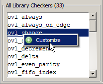

Right-Click Menus
Click the
right mouse button on a library checker or a customized checker
to open a context menu. You can then invoke a related operation.
When you right-click a checker in the All Library Checkers list the Customize selection allows you to add it to the Customize Checkers list (Figure 1).
Figure 1. Right-Click Menu in the All Library Checkers
List

The right-click menu in the Customized Checkers list gives you the option to Compile, Rename, or Remove the selected assertion checker (Figure 2).
Figure 2. Right-Click Menu in the Customized Checkers List